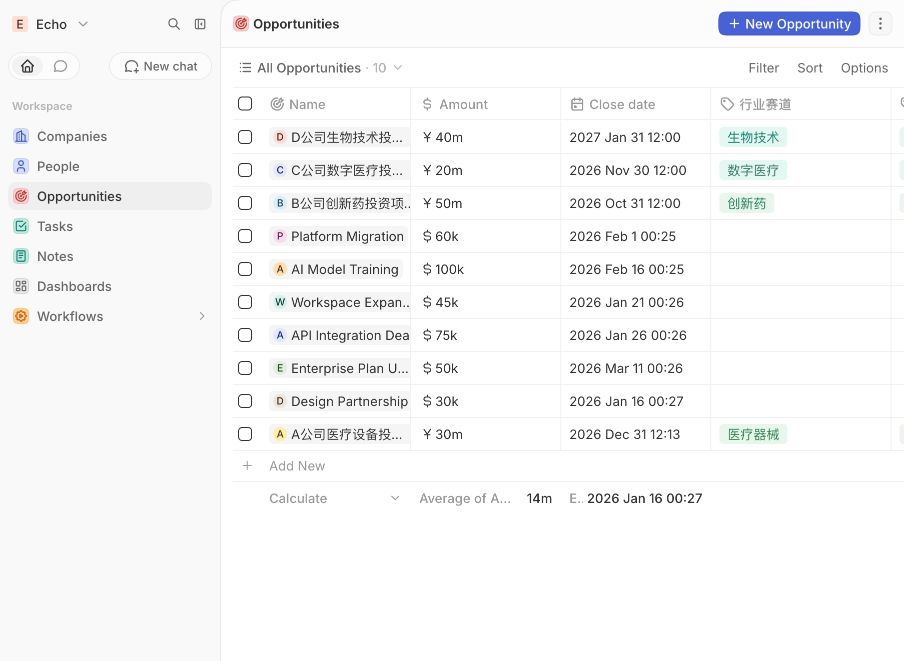
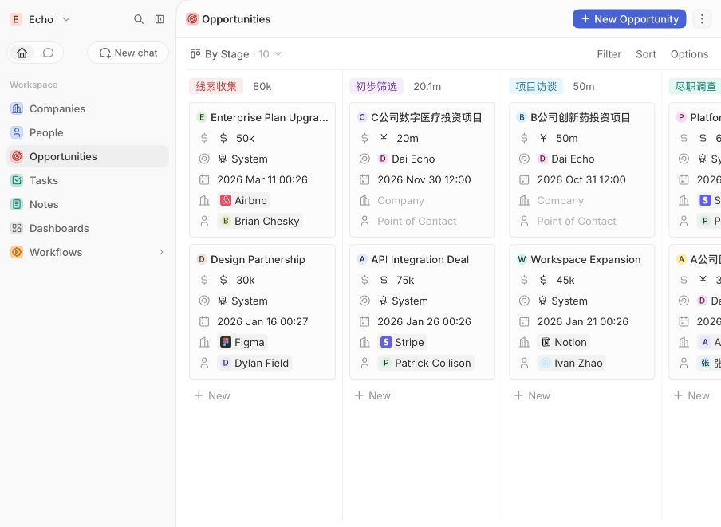
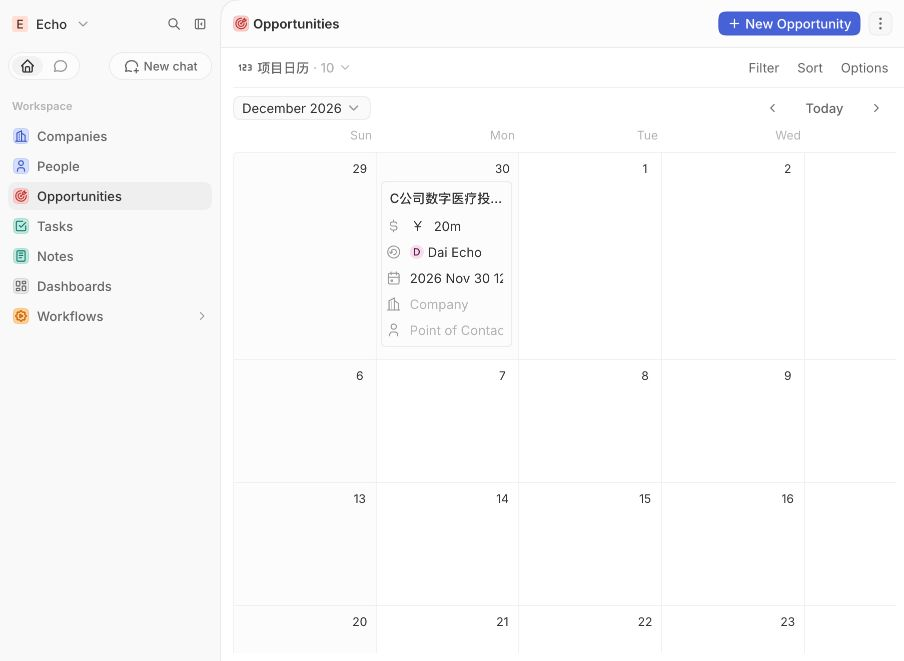

为什么做这个项目
在多项目并行场景中，真正影响效率的往往不是“没有文件”，而是最新状态、材料缺口、责任人和关键日期散落在 Excel、微信、邮件与会议纪要中。
状态不可见
项目推进到哪一步需要反复口头确认，阶段停留和下一步行动不清晰。
材料难追踪
财务报表、股东名册、知识产权等材料缺口没有统一状态。
协作易遗漏
联系人、沟通记录、任务和截止日期相互割裂，容易错过节点。
产品解法
先用可演示的最小闭环验证信息结构，而不是一次设计“大而全”的投管系统。
7
项目阶段
从线索收集到投决、投资或终止，统一状态口径。
5
专用字段
赛道、来源、材料完整度、风险与项目阶段。
3
核心视图
表格负责录入，看板负责阶段，日历负责关键节点。
线索收集
→
初步筛选
→
项目访谈
→
尽职调查
→
投决会
→
已投资 / 已终止
MVP 信息架构
围绕“项目是什么、处在哪、缺什么、风险如何、谁来跟、何时完成”设计字段。
项目名称拟投资金额计划日期行业赛道项目来源材料完整度风险等级项目阶段企业与联系人负责人沟通记录跟进任务
匿名化验证数据
4 个演示项目覆盖不同赛道、来源、材料状态、风险和推进阶段。金额与公司信息均为虚构。
| 项目 | 金额 | 赛道 | 来源 | 材料 | 风险 | 阶段 | 日期 |
|---|---|---|---|---|---|---|---|
| A公司医疗设备投资项目 | ¥30m | 医疗器械 | 机构推荐 | 部分齐全 | 中 | 尽职调查 | 2026-12-31 |
| B公司创新药投资项目 | ¥50m | 创新药 | 主动挖掘 | 待收集 | 高 | 项目访谈 | 2026-10-31 |
| C公司数字医疗投资项目 | ¥20m | 数字医疗 | 企业自荐 | 基本齐全 | 低 | 初步筛选 | 2026-11-30 |
| D公司生物技术投资项目 | ¥40m | 生物技术 | 内部转介 | 已齐全 | 中 | 投决会 | 2027-01-31 |
系统演示
Twenty CRM 中已建立项目总表、阶段看板和项目日历，并配置任务与沟通记录。

项目总表：集中录入和比较金额、日期、赛道等信息。

字段视图：快速查看来源、材料、风险和阶段。

阶段看板：按项目推进状态分组。

项目日历：管理访谈、尽调与投决等关键日期。
优先级与迭代
P0 核心闭环
项目档案、阶段状态、材料与风险、负责人和跟进任务。
P1 效率提升
日历、筛选、沟通模板、逾期提醒和阶段停留提示。
P2 管理能力
项目评分、审批工作流、投后指标、漏斗和风险仪表盘。
面试时怎么介绍
“我没有把它包装成开发项目，而是把真实业务问题转化为产品流程、数据结构和可演示 MVP，重点展示问题定义、信息架构、优先级和落地验证能力。”
隐私说明：本项目未上传或展示任何粤科创投、真实项目方或联系人敏感资料。